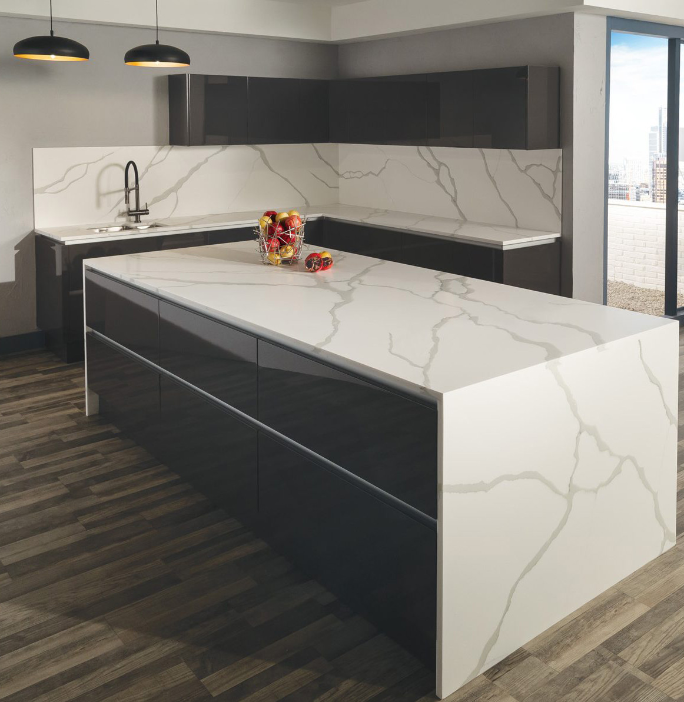

A continuación encontrarás los materiales con los cuales son realizados nuestros proyectos.
Formado a partir de las piedras calizas y con un alto contenido de carbonato cálcico. Se extraen de las montañas para luego transformarlas en ingeniosas obras de arte.
Elaborados bajo la más alta tecnología, están compuestos por 93% cuarzo y 7% resina de calidad. Su versatilidad en colores y perfección en diseño los hacen una solución efectiva para interiores y exteriores.
Los granitos naturales están formados esencialmente por cuarzo, feldespato alcalino, plagioclasa y mica. Se extraen con total cuidado para garantizar su calidad de principio a fin.
Es una piedra de origen Español, elaborada a partir de materiales 100% naturales. Resiste al impacto, a los rayos del sol, es amigable con el medio ambiente, resistente al rayado, resistente a las altas y bajas temperaturas.
